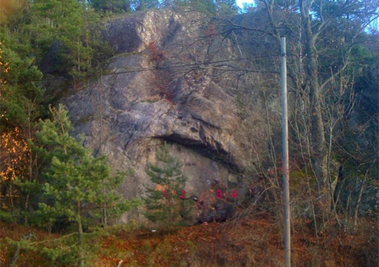

Järna, Tuna backar

Allmänt
Superfin klippa vid Rönnvägen, nära Järna brandstation.
Balansig och fin klättring.
Vägbeskrivning
Från Södertälje/Sthlm åker du väg 57 mot Järna och svänger av till höger mot Nykvarn. Klippan ligger sedan på höger sida precis vid vägen efter 1,5 km
Problem
- 1
- Asuk ♥ Teya
- 6A+
- Sittstart upp till sloper och sidokant, vidare upp via taket och toppa ut rakt upp (inte fega ut till vänster =) (Leif Olsson. 10)
- 2
- Off we go!
- 6B+
- Sittstart upp till bra sidocrimpers, skicka upp till liten crimp till höger om "Asuk ♥ Teya". Vidare upp via bra jugge och toppa ut rakt upp till höger. (Leif Olsson. 10)
- 3
- Klaustrofobiske Asuk
- 6B
- Sittstart upp till de 2 crimparna längst till höger nedanför taket. Gå upp via taket och avsluta via "Off we go!" (Leif Olsson. 10)
- 4
- Hey ho, lets go!
- 6B+
- Samma start som Klaustrofobiske Asuk, men går istället ut till höger till bra hylla och sen toppa ut rakt upp till höger. (Leif Olsson.)
Kategori:Södermanland
Copyright (C) Permission is granted to copy, distribute and/or modify this document under the terms of the GNU Free Documentation License, Version 1.3